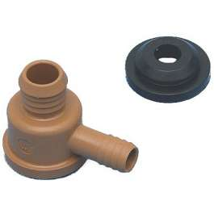
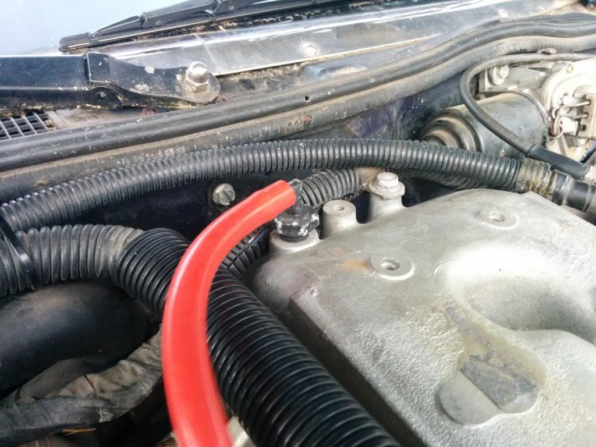

-
Alright, here is something that has been causing me trouble lately. I have a variety of new parts on my car and have managed to get it running pretty well. It finally idles decently, the idle stuff has been blocked off, new CHTS, new plugs, new wires, new dizzy cap and rotor, tried two ECUs, new silicon vacuum lines to eliminate leaks, Seafoamed everything, fresh gas, etc.
Anyways, the problem is this: The car idles fairly consistently, but at very low throttle (think below 1500 or even 1200 rpm, barely any) the car acts misses like crazy, the rpms drop and if held long enough the car will die. If I hit the throttle like normal, the car revs up fine and is fairly smooth. It is only when I barely touch the throttle that it wants to die.
Of course, I figured that this was because my TPS wasn't adjusted properly, so I broke out the multimeter. It said it was fine, but it still didn't help. Instead, I tried setting the TPS by hand, turning it with the engine on until the car dies, then turning it back just until the car idles right. This didn't work either. I have tried any number of configurations for the TPS over and over and nothing seems to help.
Perhaps I am still doing something wrong with the TPS, but I've tried enough times that now I figure I'll ask for help and see if anyone has some insight.
1986 300ZX N/A 5Speed project. Needs work, but that's the point, isn't it? -
Sounds like ignition timing to me.sigpic -
Time to get a timing light then? The CAS was also replaced when I initially got the car with a supposedly known good unit bought from a member here. I've tried advancing and retarding the distributor timing and that hasn't seemed to help the problem.
1986 300ZX N/A 5Speed project. Needs work, but that's the point, isn't it? -
What is the state of your PCV system? Modified? Breathers?sigpic -
Breather on the driver's side, standard hose to the manifold on passenger side if I am thinking of the right thing. In addition ASCO block off plates are installed and the main intake hose was replaced with one that doesn't have any holes in it from the TB to the MAF.
1986 300ZX N/A 5Speed project. Needs work, but that's the point, isn't it? -
Yeah, you're sucking in false air through that breather.
Plug the PCV line, and see if it fixes it.sigpic -
Plug the PCV line on the manifold or the valve cover? The manifold should be sealed, but I'll make sure. Also, now that I look at it I am reminded that there is a vacuum line coming off of the top center towards the back that I couldn't find on the vacuum line list when I redid the lines with silicon. After plugging it for a while, I just hooked it up behind the filter before the MAF, which would mean unmetered false air is getting into the intake. However, the reason I hooked it up there temporarily is that it was plugged, but the car idles much better with it getting air. And yes I did try plugging it again to see if that would help the problem now that I thought of it, and it didn't improve things. Hopefully this image makes it clear where the line comes off of:
vacline example.jpg
Does this line simply need to be attached after the MAF? I completely forgot that I hadn't found a way to hook it up correctly, so if this is the problem I'll feel pretty stupid. Still, like I said I didn't notice it in any of the vacuum line guides.
1986 300ZX N/A 5Speed project. Needs work, but that's the point, isn't it? -
That line runs to the vacuum tank, for the climate control operation.
The driver side valve cover needs to have a hose running to the intake pipe before the throttlebodyhttp://z31performance.com/showthread…2-2-(-now-NA2T
My build thread (: -
Look man, if you have a breather on the valve cover, it needs to be done properly. You are definitely sucking in air through the crankcase.
-What happened to the line going to the driver's side valve cover? This needs to be capped/plugged at the intake pipe.
-On the passenger side, the PCV valve needs to be removed and plugged.
-On the opposite valve cover, that big tube needs to be replaced by:
A. A open "draft tube" leading down to the ground.
or
B. A hose going to one of those oil catch cans, then from the catch can to a spot in between the air filter and the MAF.
(I found a neat little brake booster fitting from HELP! at the parts store. It plugs right into the valve cover and even has a check valve.)

Also, if you have a BOV, it's probably leaking and will cause the same problems. Remove and throw away.sigpic -
Also, this is the line in question that I was talking about before:Originally posted by Butter

Thanks for all the help, hopefully I haven't missed something obvious in these pictures that would fix it.
1986 300ZX N/A 5Speed project. Needs work, but that's the point, isn't it? -
That last photo you posted. That line should run to the cruise control, and also be T'd off to the climate control. Your issue isn't there, while leaky climate control vacuum lines do create a vacuum leak - I've never seen them affect how the car runs, as its so minimal. Unless the large hose is leaking (to cruise control. -Is it removed?) then you may have an issue.
Do this, and report back. Unplug every sensor/actuator except CHTS, CAS, MAF and TPS. How does it run? It should run perfectly fine, as those are all that are truly needed....but the other sensors - when bad - can cause it to run poorly. Lastly, is your throttle body adjusted properly to idle now? Did you adjust the TPS after adjusting the throttle? Its only an idle switch, so if the "idle" position doesn't get contact while idling, the idle will be rough.- VG30DET (HE341) 86 300ZX - 1982 280ZX Turbo - Headered NA 1986 300ZX 2+2 - 2000 Xterra - -
That intake pipe is 50% your problem. You have a vacuum leak, and that sorry excuse for a intake pipe is leaking.
The incorrect use of the PCV breather on the valve cover is the other 50% of the problem.
1986 300ZX Turbo…sold
1990 Skyline GT-R…new money pit
2014 Juke Nismo RS 6-speed…daily -
I was worried that might be the case, I installed that for $10 from auto zone instead of plugging the multiple holes in the stock intake. Any suggestions on what to use instead/ how best to seal the stock intake? I still have all the parts, in fact I have duplicates of most.
1986 300ZX N/A 5Speed project. Needs work, but that's the point, isn't it? -
hahaha I didn't even notice that picture. Thats horrible. Might as well use dryer vent.Originally posted by NissanEgg
Get a 2" to 2.5" 90deg coupler, a 2.5" aluminum 90deg pipe, and a 2.5" to 2.75" coupler and some t-bolt clamps. This will work until you do an intercooler setup.
- VG30DET (HE341) 86 300ZX - 1982 280ZX Turbo - Headered NA 1986 300ZX 2+2 - 2000 Xterra - -
Throw intake "pipe" that's on there now in the trash. You can get heater hose plugs in the same aisle at the parts store to plug the fittings in the oem one (5/8"?).
With no idle controls, you will need to adjust the throttle set screw to acheive @900rpm, then recalibrate the tps to match. You must ensure all air leaks are handled first though.
Looks like you need to adjust your throttle cable too.sigpic

Copyright © 2006–. All rights reserved. Privacy Policy